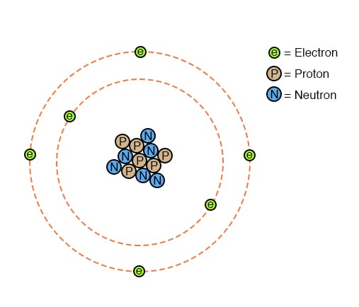
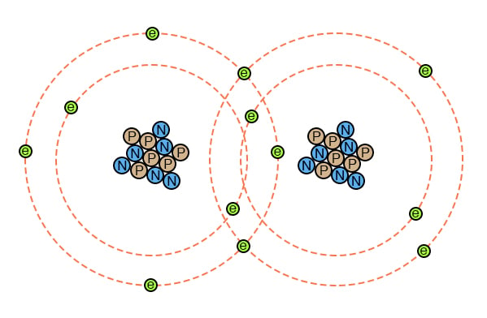
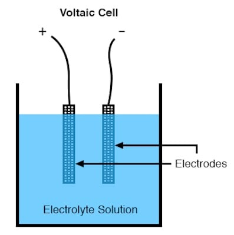
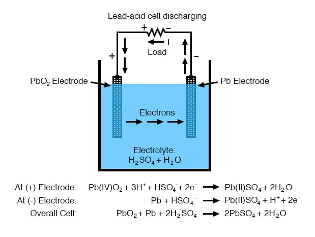
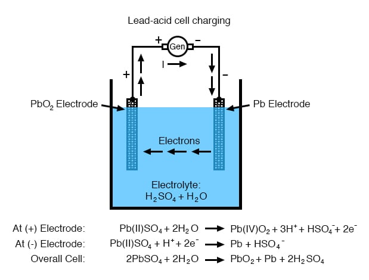

So far in our discussions on electricity and electric circuits, we have not discussed in any detail how batteries function. Rather, we have simply assumed that they produce constant voltage through some sort of mysterious process. Here, we will explore that process to some degree and cover some of the practical considerations involved with real batteries and their use in power systems.
In the first chapter of this book, the concept of an atom was discussed, as is the basic building block of all material objects. Atoms, in turn, are composed of even smaller pieces of matter called particles. Electrons, protons, and neutrons are the basic types of particles found in atoms. Each of these particle types plays a distinct role in the behavior of an atom. While electrical activity involves the motion of electrons, the chemical identity of an atom (which largely determines how conductive the material will be) is determined by the number of protons in the nucleus (center).

The protons in an atom’s nucleus are extremely difficult to dislodge, and so the chemical identity of an atom is very stable. One of the goals of the ancient alchemists (to turn lead into gold) was foiled by this sub-atomic stability. All efforts to alter this property of an atom by means of heat, light, or friction were met with failure. The electrons of an atom, however, are much more easily dislodged. As we have already seen, friction is one way in which electrons can be transferred from one atom to another (glass and silk, wax and wool), as well as heat (generating voltage by heating a junction of dissimilar metals, as in the case of thermocouples).
Electrons can do much more than just move around and between atoms: they can also serve to link different atoms together. This linking of atoms by electrons is called a chemical bond. A crude (and simplified) representation of such a bond between two atoms might look like this:

There are several types of chemical bonds, the one shown above is representative of a covalent bond, where electrons are shared between atoms. Because chemical bonds are based on links formed by electrons, these bonds are only as strong as the immobility of the electrons forming them. That is to say, chemical bonds can be created or broken by the same forces that force electrons to move: heat, light, friction, etc.
When atoms are joined by chemical bonds, they form materials with unique properties known as molecules. The dual-atom picture shown above is an example of a simple molecule formed by two atoms of the same type. Most molecules are unions of different types of atoms. Even molecules formed by atoms of the same type can have radically different physical properties. Take the element carbon, for instance: in one form, graphite, carbon atoms link together to form flat “plates” which slide against one another very easily, giving graphite its natural lubricating properties. In another form, diamond, the same carbon atoms link together in a different configuration, this time in the shapes of interlocking pyramids, forming the material of exceeding hardness. In yet another form, Fullerene, dozens of carbon atoms form each molecule, which looks something like a soccer ball. Fullerene molecules are very fragile and lightweight. The airy soot formed by excessively rich combustion of acetylene gas (as in the initial ignition of an oxy-acetylene welding/cutting torch) contains many Fullerene molecules.
When alchemists succeeded in changing the properties of a substance by heat, light, friction, or mixture with other substances, they were really observing changes in the types of molecules formed by atoms breaking and forming bonds with other atoms. Chemistry is the modern counterpart of alchemy and concerns itself primarily with the properties of these chemical bonds and the reactions associated with them.
A type of chemical bond of particular interest to our study of batteries is the so-called ionic bond, and it differs from the covalent bond in that one atom of the molecule possesses an excess of electrons while another atom lacks electrons, the bonds between them being a result of the electrostatic attraction between the two unlike charges.
When ionic bonds are formed from neutral atoms, there is a transfer of electrons between the positively and negatively charged atoms. An atom that gains an excess of electrons is said to be reduced; an atom with a deficiency of electrons is said to be oxidized. A mnemonic to help remember the definitions is OIL RIG (oxidized is less; reduced is gained). It is important to note that molecules will often contain both ionic and covalent bonds. Sodium hydroxide (lye, NaOH) has an ionic bond between the sodium atom (positive) and the hydroxyl ion (negative). The hydroxyl ion has a covalent bond (shown as a bar) between the hydrogen and oxygen atoms:
Na+ O—H- Sodium only loses one electron, so its charge is +1 in the above example. If an atom loses more than one electron, the resulting charge can be indicated as +2, +3, +4, etc. or by a Roman numeral in parentheses showing the oxidation state, such as (I), (II), (IV), etc. Some atoms can have multiple oxidation states, and it is sometimes important to include the oxidation state in the molecular formula to avoid ambiguity.
The formation of ions and ionic bonds from neutral atoms or molecules (or vice versa) involves the transfer of electrons. That transfer of electrons can be harnessed to generate an electric current. A device constructed to do just this is called a voltaic cell, or cell for short, usually consisting of two metal electrodes immersed in a chemical mixture (called an electrolyte) designed to facilitate such an electrochemical (oxidation/reduction) reaction:

In the common “lead-acid” cell (the kind commonly used in automobiles), the negative electrode is made of lead (Pb) and the positive is made of lead (IV) dioxide (PbO2), both metallic substances. It is important to note that lead dioxide is metallic and is an electrical conductor, unlike other metal oxides that are usually insulators. (note: Table below) The electrolyte solution is a dilute sulfuric acid (H2SO4 + H2O). If the electrodes of the cell are connected to an external circuit, such that electrons have a place to flow from one to the other, lead(IV) atoms in the positive electrode (PbO2) will gain two electrons each to produce Pb(II)O. The oxygen atoms which are “leftover” combine with positively charged hydrogen ions (H)+to form water (H2O). This flow of electrons into the lead dioxide (PbO2) electrode gives it a positive electrical charge. Consequently, lead atoms in the negative electrode give up two electrons each to produce lead Pb(II), which combines with sulfate ions (SO4-2) produced from the dissociation of the hydrogen ions (H+) from the sulfuric acid (H2SO4) to form lead sulfate (PbSO4). The flow of electrons out of the lead electrode gives it a negative electrical charge. These reactions are shown diagrammatically below:

Note on lead oxide nomenclature: The nomenclature for lead oxides can be confusing. The term, the lead oxide can refer to either Pb(II)O or Pb(IV)O2, and the correct compound can be determined usually from context. Other synonyms for Pb(IV)O2 are: lead dioxide, lead peroxide, plumbic oxide, lead oxide brown, and lead superoxide. The term, lead peroxide is particularly confusing, as it implies a compound of lead (II) with two oxygen atoms, Pb(II)O2, which apparently does not exist. Unfortunately, the term lead peroxide has persisted in industrial literature. In this section, lead dioxide will be used to refer to Pb(IV)O2, and lead oxide will refer to Pb(II)O. The oxidation states will not be shown usually.
This process of the cell providing electrical energy to supply a load is called discharging since it is depleting its internal chemical reserves. Theoretically, after all of the sulfuric acid has been exhausted, the result will be two electrodes of lead sulfate (PbSO4) and an electrolyte solution of pure water (H2O), leaving no more capacity for additional ionic bonding. In this state, the cell is said to be fully discharged. In a lead-acid cell, the state of charge can be determined by an analysis of acid strength. This is easily accomplished with a device called a hydrometer, which measures the specific gravity (density) of the electrolyte. Sulfuric acid is denser than water, so the greater the charge of a cell, the greater the acid concentration, and thus a denser electrolyte solution.
There is no single chemical reaction representative of all voltaic cells, so any detailed discussion of chemistry is bound to have limited application. The important thing to understand is that electrons are motivated to and/or from the cell’s electrodes via ionic reactions between the electrode molecules and the electrolyte molecules. The reaction is enabled when there is an external path for electric current and ceases when that path is broken.
Being that the motivation for electrons to move through a cell is chemical in nature, the amount of voltage (electromotive force) generated by any cell will be specific to the particular chemical reaction for that cell type. For instance, the lead-acid cell just described has a nominal voltage of 2.04 volts per cell, based on a fully “charged” cell (acid concentration strong) in good physical condition. There are other types of cells with different specific voltage outputs. The Edison cell, for example, with a positive electrode made of nickel oxide, a negative electrode made of iron, and an electrolyte solution of potassium hydroxide (a caustic, not acid, substance) generates a nominal voltage of only 1.2 volts, due to the specific differences in chemical reaction with those electrode and electrolyte substances.
The chemical reactions of some types of cells can be reversed by forcing electric current backward through the cell (in the negative electrode and out the positive electrode). This process is called charging. Any such (rechargeable) cell is called a secondary cell. A cell whose chemistry cannot be reversed by a reverse current is called a primary cell.
When a lead-acid cell is charged by an external current source, the chemical reactions experienced during discharge are reversed:

REVIEW: